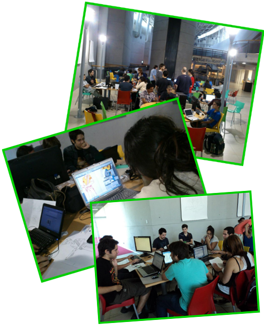

Si sos programador, diseñador, músico, ilustrador, o tenés algún otro conocimiento relacionado al arte y la tecnología podés participar del mayor evento de desarrollo de juegos del mundo!


Es un evento gratuito y multidisciplinario donde vas a tener la posibilidad de crear un juego en 48 horas.
Imaginate una hackathon centrada en el desarrollo de juegos de mesa o de video, simultánea en más de 480 sedes en 63 países, y con 48 horas para terminar tu proyecto con gente que tiene el mismo gusto por la creatividad y los juegos que vos. Eso es la Global Game Jam.
En Argentina se realiza en Buenos Aires, Santa Fe, Tucumán, Córdoba y aquí en Mendoza, que tendrá sede por tercer año consecutivo, esta vez en la Nave Cultural.
La dinámica es la siguiente:
- Traé tus herramientas, ya sea netbook, notebook, pc, tableta digital, papel, lápiz, o lo que sea en que trabajes. También algo de plata para comer.
- El primer día se libera a todo el mundo desde la sede central la consigna para desarrollar el juego. La idea es que los juegos se creen de cero a partir de esta consigna, por eso no tiene sentido llevar juegos a medio terminar. Aunque si querés, podés traer códigos, personajes o músicas creadas por vos.
- Se arman grupos para generar propuestas de juegos.
- Se escogen las mejores y te sumás a la idea que más te guste para ponerte en seguida a hacer lo que mejor sabes hacer.
No hay ganadores. La idea es que vengas a conocer gente, trabajar en equipo y aportar todo lo que sepas.
Se realizará en la Nave Cultural de Mendoza.
Ubicada en la esquina de España y Las Jarillas de Ciudad.
Cómo llegar?
Grupo 12 (Trole)
- Línea T5: Godoy Cruz - Las Heras
Grupo 4
- Línea 41
- Línea 86: Bº Espejo - Casa de Gob
- Línea 81: Rawson por San Martín - Casa de Gobierno
- Línea 84: Minetti - Casa de Gob
Grupo 7
- Expreso Reconquista - Reconquista con Casa de Gobierno
Grupo 3
- Línea 111-113: Club Hípico - E.G.B. - B° Olivares - U.N.C. por Hospital Central de Mendoza
- Línea 112
- Línea 114-115: B° Sanidad - El Challao por Centro - San Isidro
Grupo 6
- Línea 63: Independencia - Patricias Mendocinas
- Línea 66: Dorrego - Matheu
- Línea 131
- Línea 133
Los días 24, 25 y 26 de Enero
La sede Mendoza tiene estos horarios:
- Viernes 24 de 17 a 20hs
- Sábado 25 de 9 a 20hs
- Domingo 26 de 9 a 20hs